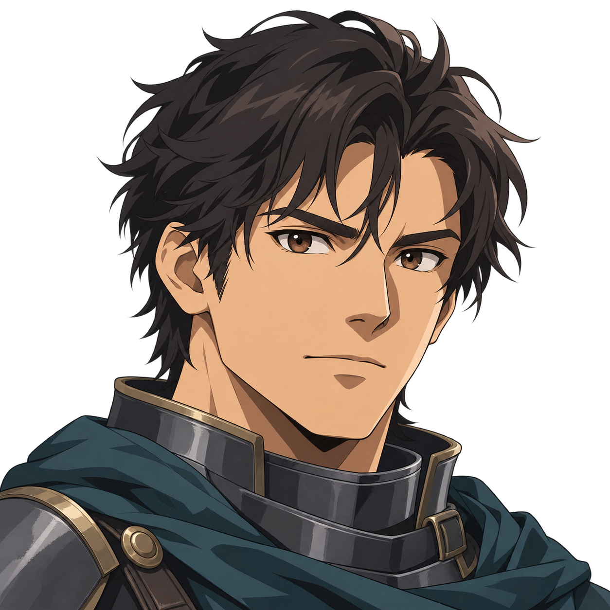
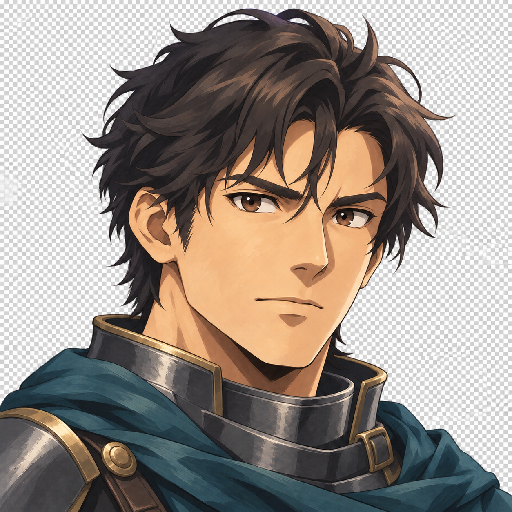
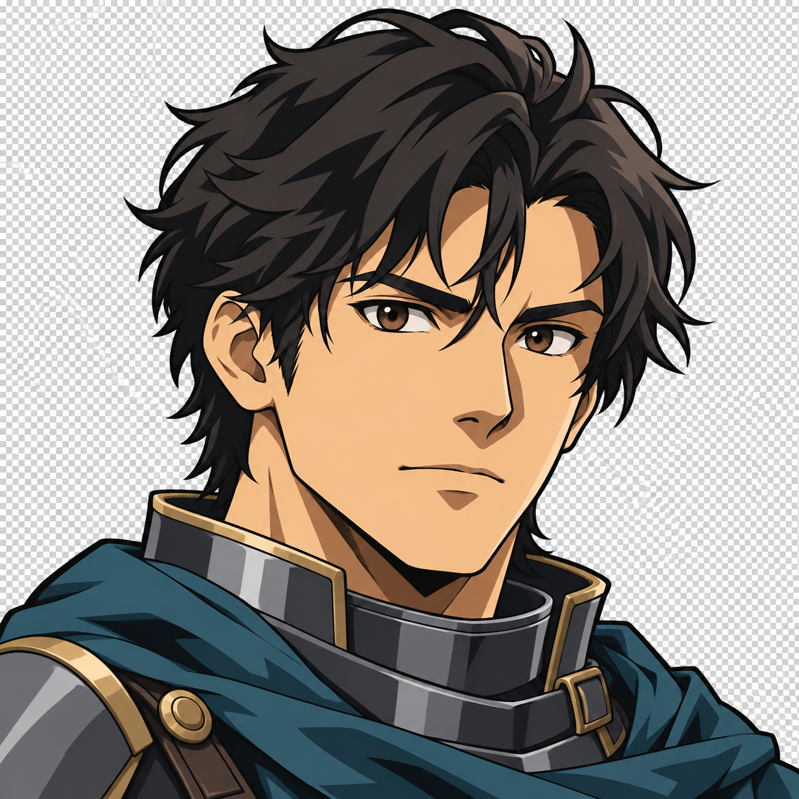

A · 애니메이션 셀 채색

기술 권장 후보. 실제 알파 있음. 머리 위 여백과 후속 표정 연속성은 추가 검수 대상.
그림체·얼굴 가독성 검토용입니다. 실제 Godot 화면이나 최종 승인 자산이 아닙니다. 작은 칸은 128×96 HUD 안의 96×96 이미지입니다. 브라우저 확대/축소는 100% 기준입니다.

기술 권장 후보. 실제 알파 있음. 머리 위 여백과 후속 표정 연속성은 추가 검수 대상.

그림체 비교 전용: 격자는 실제 픽셀입니다. 투명도 불합격으로 실행 자산 사용 금지.

그림체 비교 전용: 격자는 실제 픽셀입니다. 투명도 불합격으로 실행 자산 사용 금지.
기존 전신 원본·실행 화면은 변경하지 않았습니다. B/C 배경 제거 재시도도 알파를 만들지 못해 성공으로 기록하지 않았습니다. 이 페이지는 파일을 변경하지 않는 정적 후보 뷰입니다.